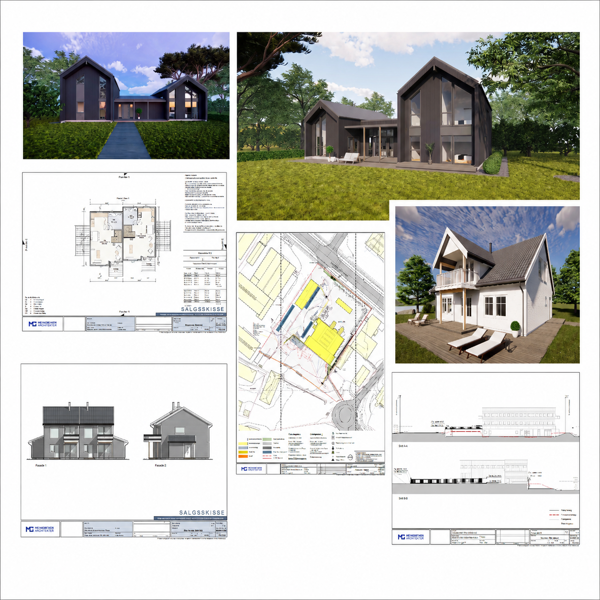

Add your image here'"/>Participated in testing ACC from the architect and end-user perspective before broader implementation across the company. Evaluated model and document workflow, publishing logic, internal review steps, and adoption challenges.
I supported colleagues during digital tool adoption by explaining platform logic, publishing workflows, review steps, and common issues in simple, practical language — bridging the gap between technical system requirements and everyday architectural practice.
I tested and evaluated ACC's usability, workflow efficiency, integration potential, end-user experience, and business relevance. Findings were documented through Miro boards, Figma references, Excel structures, Teams, diagrams, and visual process maps.
I also worked with structuring Revit parameters to connect BIM elements with quantities, tasks, work packages, and progress information — relevant to data quality, information flow, and model-based operational processes.
Additionally explored IFC/openBIM concepts and BIM data structures to understand how building information can connect across digital systems.